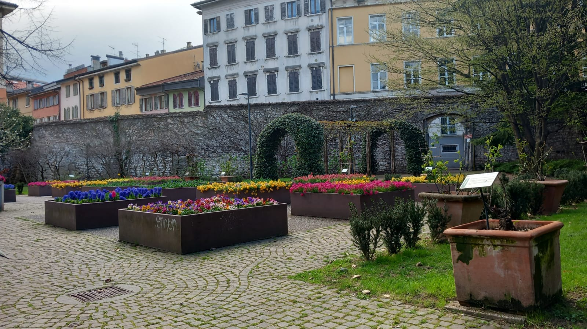
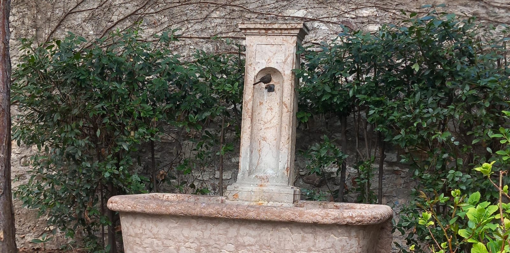
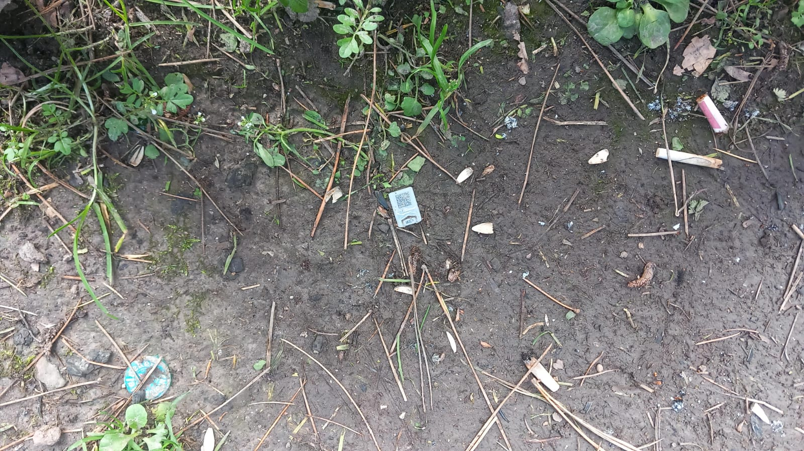

Giovanni's Diary > Subjects > Writing > Surroundings > Chapters >
San Marco Garden
I find myself in the San Marco Garden. The garden is situated in the center of the city of Trento, in the oldest part. The park is an odd but beautiful place, a drop of green in the middle of buildings and busyness. Surrounded by medieval walls, It feels like this place is outside our times. The first brave daisies paint the grass, announcing the start of this year's spring, together with many other colorful flowers on display, with their descriptions on metal plates. Pigeons are everywhere, to remind me the reality of the situation: the nature here is human-made, those plants and shiny flowers have no reasons to be here other than for show, being artificially kept alive by us humans for our own delight.
Being situated in the city center, the park is a busy place, often used to move from one place of the city to another. Lots of people are passing by. Sometimes some people stop to take pictures of the colorful flowers. I believe there is a kindergarten nearby so a few kids with their families join the others in the garden, bringing laughs and tears, emotions.

Figure 1: My view of the garden
On my right there is a fountain delivering fresh water. On top of it, a bird is drinking the water. There are a few bird houses scattered on the sides of the trees, I can see just one from my position but I believe there are more since I can hear birds singing all over the garden. A few ants and flies are moving around silently. A bigger fountain sits in the middle of the garden, but with a much weaker water throughput and It is difficult to reach, just for display.

Figure 2: The fountain on my right
Looking closely at the ground, one can find many used cigarettes, bottle caps, straws and pieces of plastic envelopes. Overall, the garden is decently clean, unless you start paying attention to the details. There are those automatic irrigation systems spread in the park, I hope they don't turn on right now (It happened once in another place).

Figure 3: Cigarettes and bottle caps
The colorful houses that surround the park completely block the view from the mountains. Maybe a glimpse of the Marzola mountain could be seen from here on a nicer day without clouds. A flag of peace is displayed from a window of one of the buildings. The clouds have moved and there is no trace of the Marzola, sadly.
A dog and the owner are joining the park, playing with a ball. Although the dog is more interested in biting the ball, with much focus. Some drops of water are falling from the sky, the sun is slowly setting and It is becoming colder.
It is the 25 of March 2025, 5:53pm, the spring season started a few days ago.
Travel: Surroundings, Index